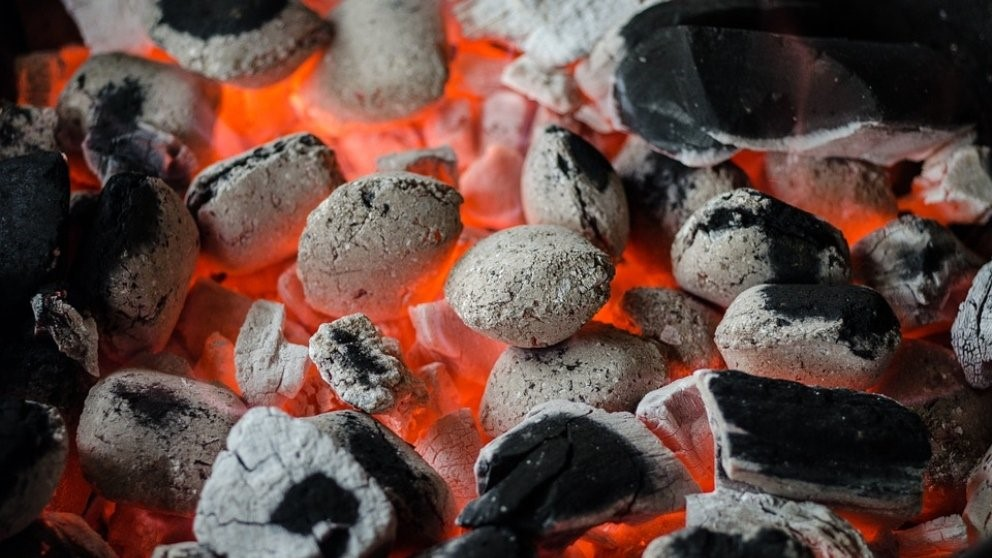

Para Fanáticos de las Parrillas
Las parrillas o barbacoas son más que un artefacto de cocina, son reuniones con familia, amigos y sonrisas de tardes soleadas, una buena comida y cervezas. Si eres amante del mundo de las parrillas, esta es tú web.
Te mostraremos todos los trucos, modelos y recetas para que Tú Parrilla sea la estrella de ese gran día.
Análisis de las mejores barbacoas de 2021


¿Cuál es tú Parrilla o Barbacoa ideal?
Hay infinidad de modelos así que es normal que no sepas qué barbacoa comprar que responda mejor a tus necesidades. Las hemos clasificado para que encuentres lo que buscas.


Marcas de Parrillas
Te mostramos las características y las mejores ofertas de barbacoas de las principales marcas del sector.


Beneficios de Cocinar en Parrillas
Puedes encontrar la parrilla que necesitas según los siguientes criterios:

El tipo de carbón le brinda un aroma particular a cada preparación
La cocción a la parrilla aumenta el grado de jugosidad de las preparaciones.
Uno de los beneficios de cocinar alimentos a la Parrilla es que contiene menos grasa. Cuando aumenta la cocción del alimento, el aceite natural que contienen se escurre, con esto la comida tendrá menor cantidad de grasa concentrada.
Nosotros te ayudaremos a encontrar esa barbacoa perfecta que lleva tu nombre y con la que compartirás tantos buenos momentos ¡y comilonas!
Nuestras últimas Recetas para Parrillas
Hacer una parrilla no es sólo poner toda la carne en el asador, te enseñamos las mejores recetas, especias, salsas y cortes para que tus parrilladas sean inolvidables


¿Que combustible es mejor : carbón,gas o madera?
Te recomendamos la lectura de este artículo: Cuál es el mejor carbón para parrillas.
Cada combustible tiene sus ventajas e inconvenientes.Por ejemplo, el gas butano tiene la ventaja de ser cómodo y fácil de utilizar, tanto en su encendido como en el control de la llama.
Sin embargo, los auténticos amantes de la barbacoa prefieren la leña o el carbón. Hay muchos tipos de maderas y carbón que podemos utilizar para nuestras parrilladas, y en muchos casos, determinarán el sabor y aroma que van a adquirir los alimentos.
Entre las maderas más utilizadas para cocinar en parrillas encontramos la leña de encina, de olivo, de roble, de naranjo, de haya y de fresno, entre otras.
¡Atención! Maderas Tóxicas para cocinar en parrillas o barbacoas.
Esto es algo que no todo el mundo sabe y que puede convertir una tarde de alegría en una pesadilla de jaquecas y dolor de cabeza.Hay maderas que NUNCA deben utilizarse para cocinar alimentos, entre estas destacan la leña de higuera, así como madera tratada con pinturas o barnices, ya que la combustión de estos productos químicos puede ser peligrosa para nuestra salud.
El carbón vegetal tiene muchas variantes según la madera de procedencia, así como su proceso de carbonización, podemos encontrar carbones de quebracho blanco, de fibra de coco, de encina, entre muchos otros.
El carbón mineral está en desuso debido a sus altos contaminantes y no aconsejamos su utilización.
Trucos para encender tu parrilla como un experto
Para comenzar a disfrutar de la mejor carne, pescado o verduras a la barbacoa hay un paso esencial y evidente, encender la barbacoa. En muchos casos parece sencillo, pero hay que tener algún que otro conocimiento para poder hacerlo del modo correcto y sobre todo, de un modo rápido, no podemos esperar que los comensales se desesperen.
Así que hoy vamos a ver los sencillos pasos para que puedas encender la parrilla sin ningún tipo de problema.
A tener en cuenta:
- -Estabiliza siempre la barbacoa.
- -Prepara papel, de periódico u otro tipo.
- -Recoge hojarasca, hierba seca o ramas finas, también secas.
- -Ten a mano el carbón.
- -En el caso de la leña, prepara ramas y troncos de diferentes tamaños.
- -Siempre a mano cerillas o un mechero.
7 Formas de Prender el Carbon
Llegado a este punto, si estás leyendo esto es porque te has decidido por el carbón para disfrutar de tu barbacoa.
Como Encender una Parrilla a Gas
Encender la parrilla de gas es sencillo, muy sencillo y en cualquier caso, siempre cuentas con el proceso en sus instrucciones.
Como Encender una Parrilla a Leña
Para encender el fuego, para encender la barbacoa con leña, vamos a necesitar que tengas a mano, de nuevo, papel de periódico o de cualquier otro tipo y leña de diferentes grosores
Guías para que te conviertas en un experto de la barbacoa..


.jpg)